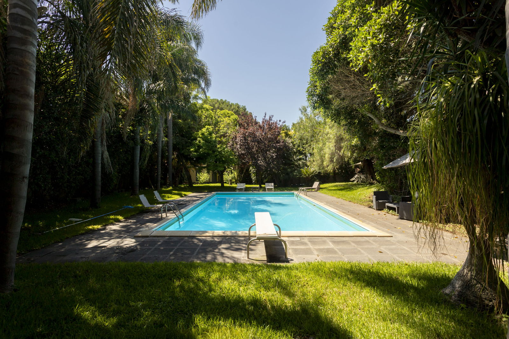

€590.000
Misterbianco / Tenutella, Sicily
Open the listingHistory-meets-contemporary residence rising among evocative ancient millstone/palmento remains, with exposed stone and brick facades, large modern glazing, parquet and a double-sided fireplace, plus a private pool in a lush ~2,800 m² garden — restored-with-pool bargain under €750k.
Opened 8 Sep 2026 via E&V expose __NEXT_DATA__ (EN+IT). salesPrice €590000. 4 bed / 4 bath / ~363 m² total (~340 living) / plot 2825. hasSwimmingPool=True. condition=condition.good. Shop=Catania. Locale Misterbianco / Tenutella. UUID/ref deduped against board + 09-08 existing files. Near Centro Sicilia / Humanitas — still private garden villa, not communal.